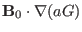
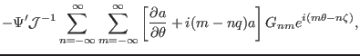
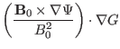
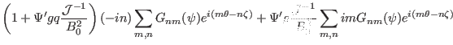
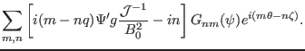

Next: Discrete form of elements Up: Flux coordinate system Previous: Fourier expansion over and
Next, consider the calculation of the surface operators acting on the above
perturbation. Using Eq. (168), we obtain
|  |  | (172) |
|  | |||
|  | |||
|  | (174) |
yj 2015-09-04